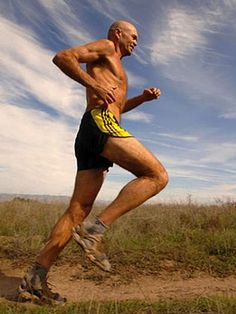

Cabello Blanco was an influential runner who left the modern world to run in the back of beyond with the tribe of superhuman runners. For Cabello running was the hope for a better world. Running was the bridge between old and new and and between where we are now with war and suffer and to the place of people work together as a tribe again. Many of his life philosophies were learned through personal hardship, when he found himself face to face with an old world tribe from mexico that lived everything he felt he left the modern American culture and moved to the copper canyons to spend more time contemplating life and running in close proximity to the Raramuri.
Cabello Blanco was an influential runner who left the modern world to run in the back of beyond with the tribe of superhuman runners. For Cabello running was the hope for a better world. Running was the bridge between old and new and and between where we are now with war and suffer and to the place of people work together as a tribe again. Many of his life philosophies were learned through personal hardship, when he found himself face to face with an old world tribe from mexico that lived everything he felt he left the modern American culture and moved to the copper canyons to spend more time contemplating life and running in close proximity to the Raramuri.
Click here to see Cabello Blanco's wiki